期間限定Fate/Grand Order Waltz in the MOONLIGHT/LOSTROOM×Fate/Grand Order聯動活動「閃耀吧！ 聖杯演唱會！！ ～鶴的偶像報恩～」中，推進逐日開放的主線關卡劇情的話，可靠關卡通過報酬和活動道具交換入手全12種偶像靈衣的靈衣開放權。
可入手的靈衣，是在本活動劇情登場從者們所穿的偶像靈衣。
※本頁面皆為開發中圖片。會有與實際圖片相異的情況。
◆交換期間◆
2021年4月26日(一) 19:30～5月17日(一) 11:59
※請注意活動舉辦期間結束及活動道具交換期間結束後，會變得無法入手偶像靈衣的靈衣開放權。

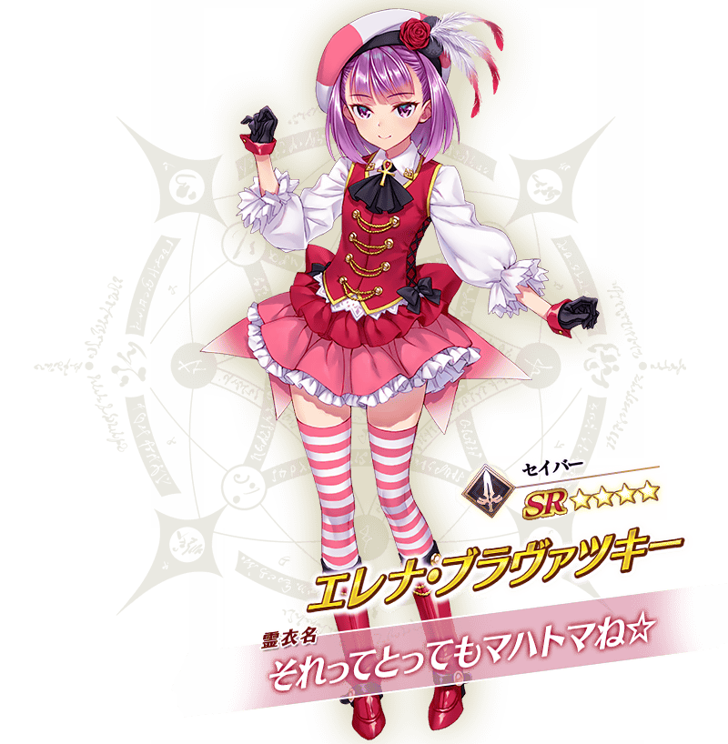
※4月26日(一) 22:30圖片更新
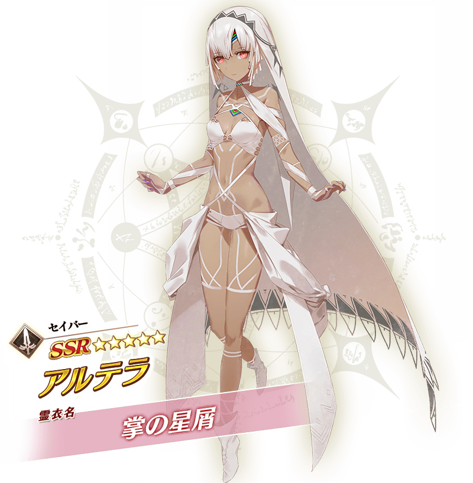
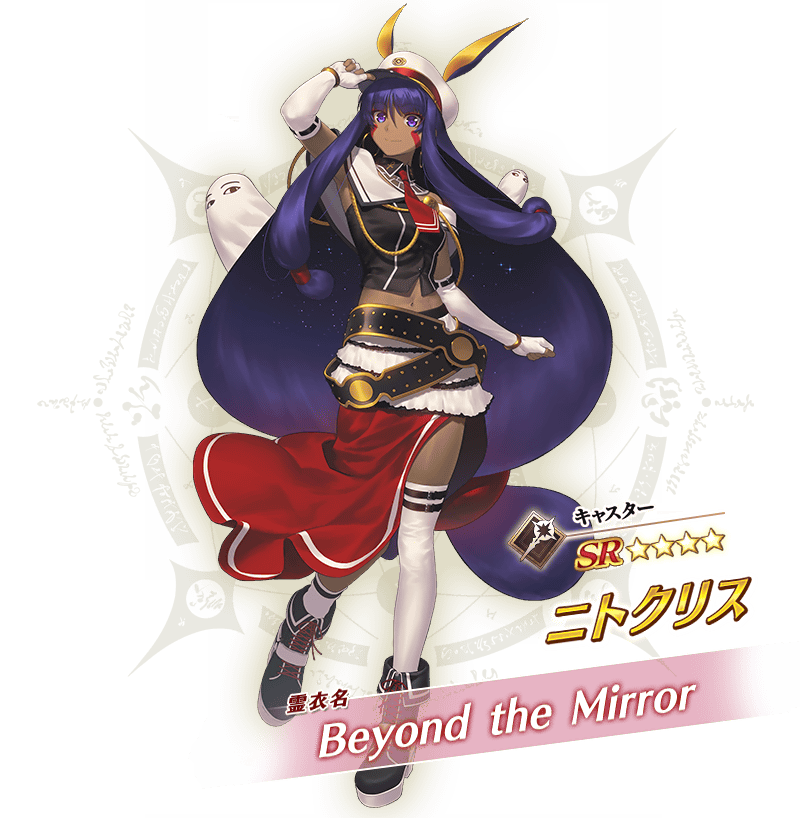
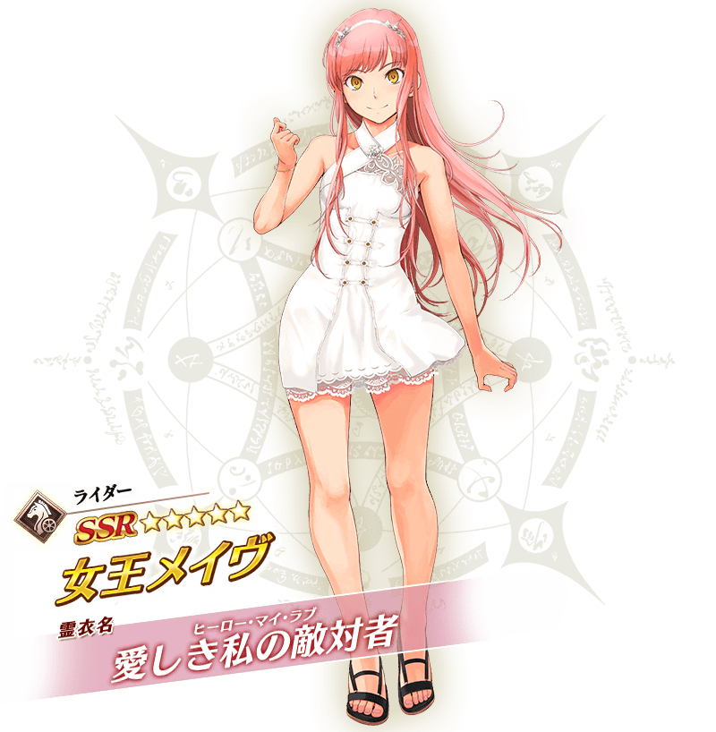
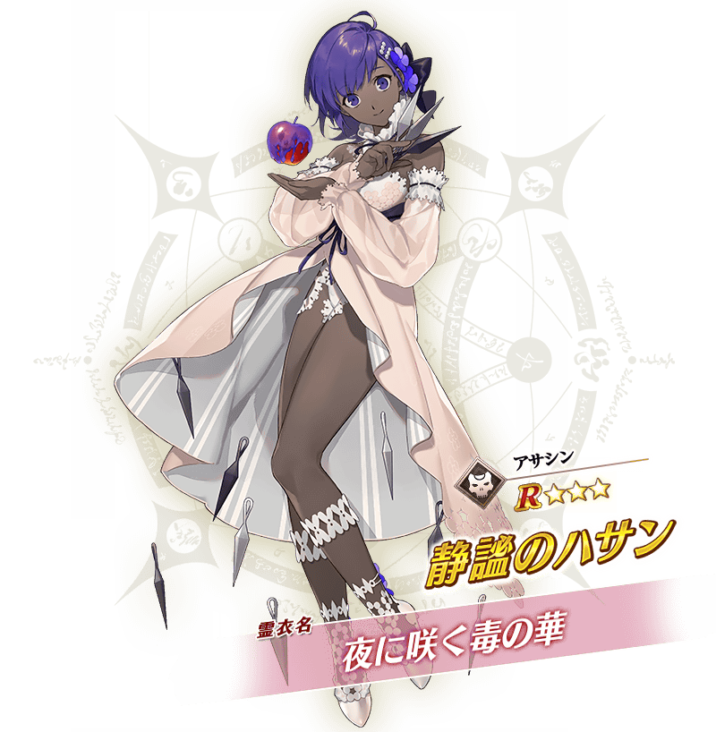
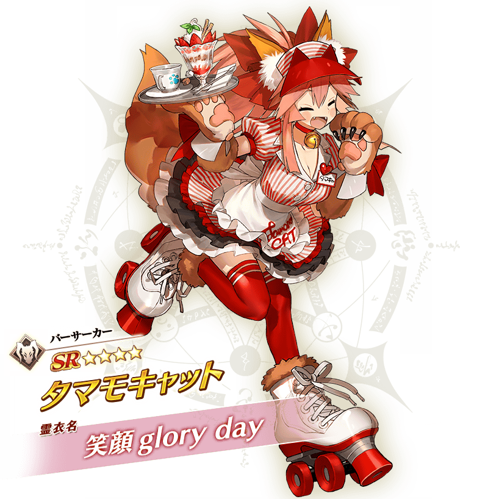
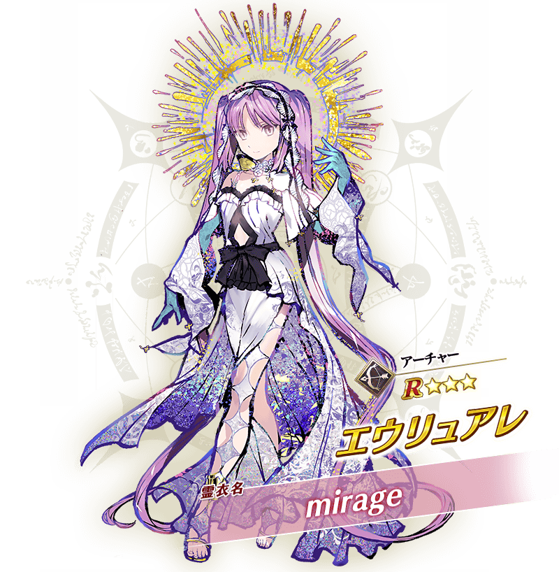
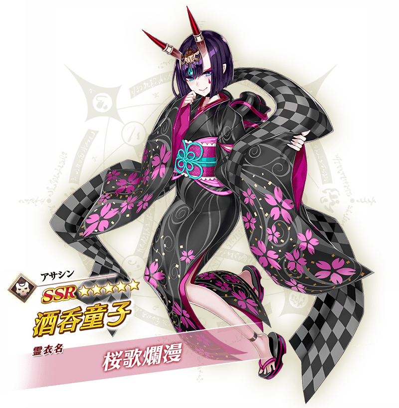
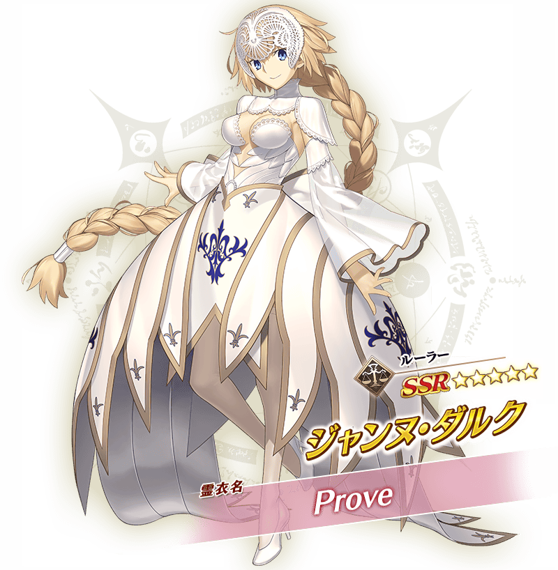
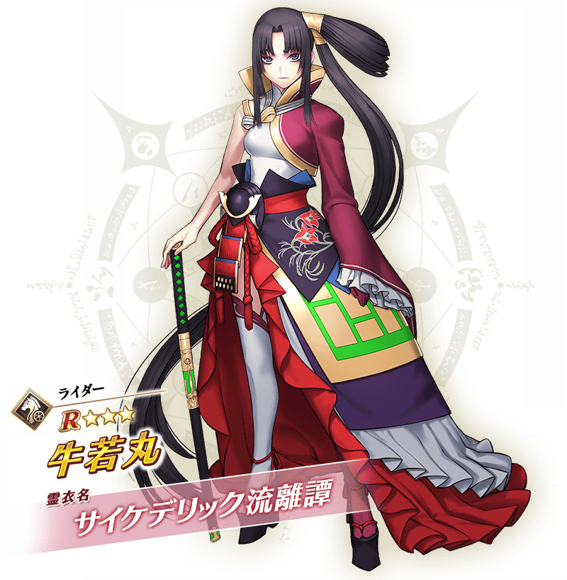
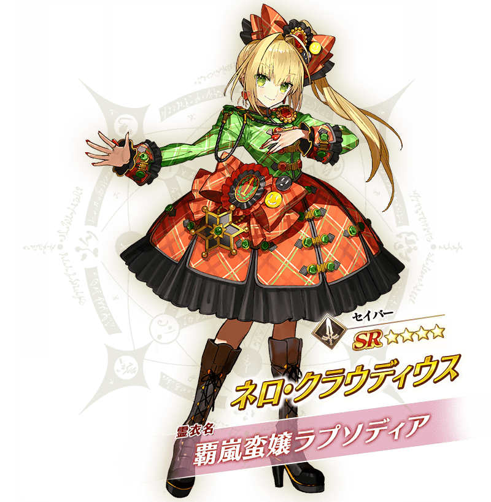
◆有關偶像靈衣的靈衣開放權的注意◆
※各偶像靈衣的靈衣開放所需的偶像靈衣開放券，只限聯動活動「閃耀吧！ 聖杯演唱會！！ ～鶴的偶像報恩～」的活動舉辦期間中才能入手。
※活動期間結束後(2021年5月10日(一) 12:00以後)進行偶像靈衣的靈衣開放時，變得可選擇使用偶像靈衣開放券來開放，或跟平常的靈衣同様使用QP與素材來開放。
※各偶像靈衣會配合外觀變化一部份語音。 ※請注意未持有對象從者的情況，可入手偶像靈衣的靈衣開放權。但無法進行靈衣開放。
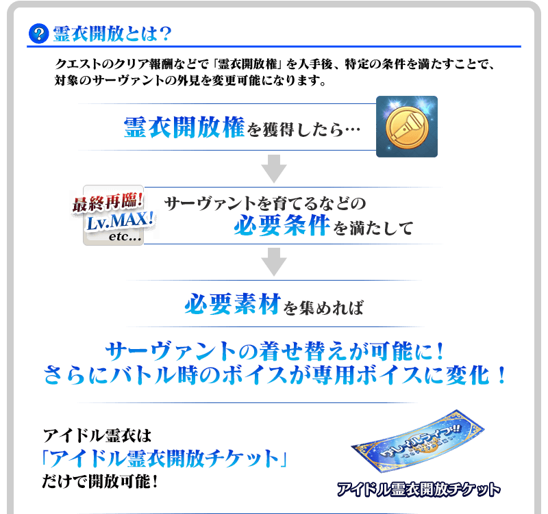 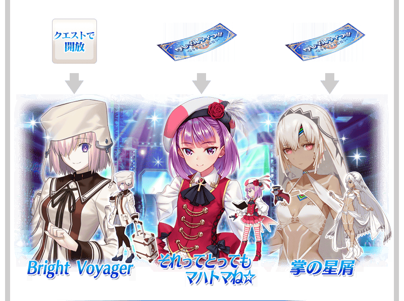 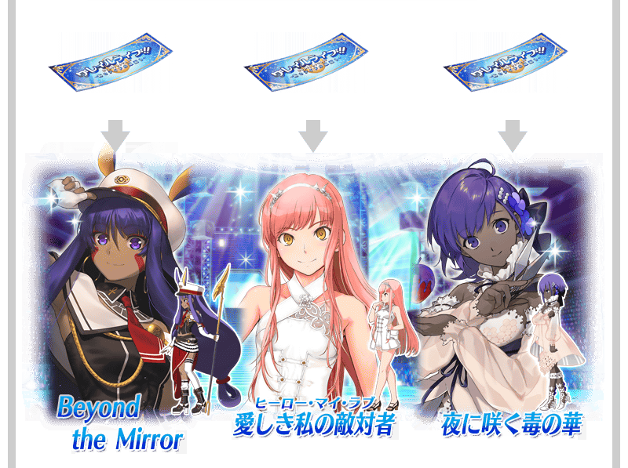 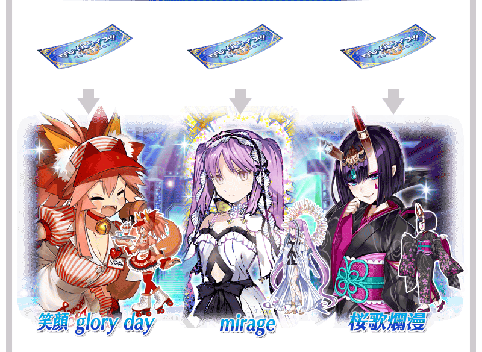 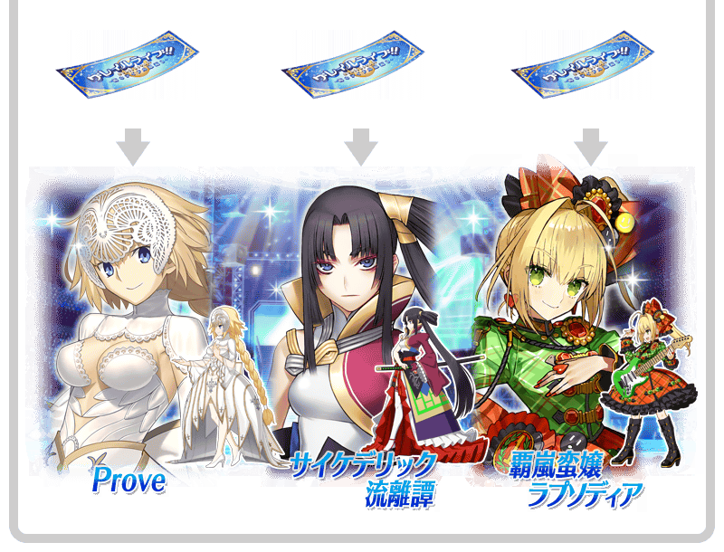
※瑪琇・基利艾拉特的靈衣「Bright Voyager」是靠劇本進行開放。

「靈衣開放」是自強化畫面進行。
※「靈衣開放」後會自動切換戰鬥角色和圖示。若想回到「靈衣開放」前的狀態和變成其他再臨階段的情況，可自從者詳細畫面變更。 ※進行「靈衣開放」不會讓職階和能力等有所變化。
介紹新追加靈衣開放的全12位從者們的寶具演出！
【★3(R)瑪琇・基利艾拉特】
【★4(SR)海倫娜・布拉瓦茨基(Caster)】
【★5(SSR)阿提拉(Saber)】
【★4(SR)尼托克里絲(Caster)】
【★5(SSR)女王梅芙(Rider)】
【★3(R)靜謐的哈桑】
【★4(SR)玉藻貓】
【★3(R)尤瑞艾莉】
【★5(SSR)酒吞童子(Assassin)】
【★5(SSR)貞德(Ruler)】
【★3(R)牛若丸(Rider)】
【★4(SR)尼祿・克勞狄烏斯(Saber)】
其他還有，
・Fate/Grand Order Waltz in the MOONLIGHT/LOSTROOM×Fate/Grand Order聯動活動「閃耀吧！ 聖杯演唱會！！ ～鶴的偶像報恩～」
・FGO Waltz in the MOONLIGHT/LOSTROOM聯動活動Pick Up召喚(每日交替)
・Fate/Grand Order Waltz in the MOONLIGHT/LOSTROOM×Fate/Grand Order聯動活動開幕前夕宣傳活動
・FGO Waltz in the MOONLIGHT/LOSTROOM聯動活動開幕前夕Pick Up召喚(每日交替)
以期間限定舉辦中！
關於詳情，請自下述橫幅確認。
■Fate/Grand Order Waltz in the MOONLIGHT/LOSTROOM×Fate/Grand Order聯動活動「閃耀吧！ 聖杯演唱會！！ ～鶴的偶像報恩～」詳細情報

■「FGO Waltz in the MOONLIGHT/LOSTROOM聯動活動Pick Up召喚(每日交替)」詳細情報

■「Fate/Grand Order Waltz in the MOONLIGHT/LOSTROOM×Fate/Grand Order聯動活動開幕前夕宣傳活動」詳細情報

■「FGO Waltz in the MOONLIGHT/LOSTROOM聯動活動開幕前夕Pick Up召喚(每日交替)」詳細情報